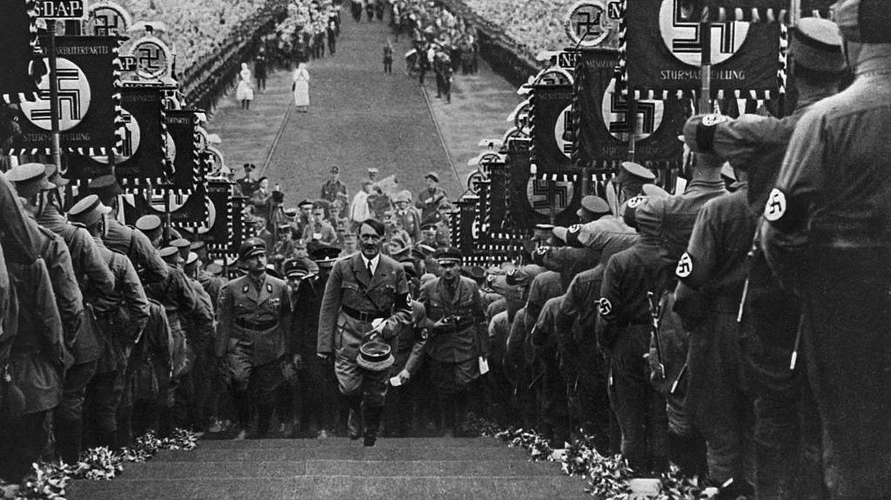

Pembukaan
Perang Dunia II berlangsung dari 1 September 1939 - 2 September 1945. Dilatarbelakangi oleh Ideologi, politik, dan ekonomi yang terjadi pada saat itu. Dan merupakan dampak dari Perang Dunia I yang terjadi pada 1914-1918. Lalu Bagaimana Perang Dunia II bisa terjadi ?
Politik dan Ideologi

Restorasi Meiji pada 1868 membuat Jepang mengubah struktur pemerintahannya kembali menjadi Kekaisaran yang pada awalnya adalah Keshogunan. Hal ini terjadi karena rakyat Jepang sadar betapa tertinggalnya negara mereka dibanding negara-negara lain. Pada era Kekaisaran ini Jepang mampu meningkatkan ekonomi dan militer, bahkan mereka mampu mengalahkan Kekaisaran Rusia pada perang Russo-Japanese War pada 1904-1905. Lalu kenapa Era Kekaisaran Jepang mampu mengubah Jepang ? Hal itu terjadi karena pada era Kekaisaran mereka lebih memilih membuat dan menggunakan produk dalam negerinya sendiri dan menanamkan jiwa patriotik/rela mati demi sang Kaisar sejak dini, serta teknologi senjata yang mulai maju. Jepang pada perang dunia II bergabung ke Blok Axis karena pada saat itu Jepang dalam Krisis ekonomi dan sumber daya, Jepang menganggap Jerman memiliki tujuan yang sama dengan Jepang, Yaitu mampu menjadi negara yang unggul.
Lalu kenapa Jerman mau melakukan perang untuk menguasai eropa bahkan sampai Amerika ? Semua ini berawal ketika Jerman masih dalam sistem Pemerintahan Kerajaan Prussia. Kerajaan Prussia mengalami kekalahan pada Perang Dunia I, menyebabkan Jerman mengubah sistem pemerintahannya menjadi Republik Parlementer pada 1919. Pada 30 Januari 1933 Adolf Hitler dari Partai Nationalsozialistische Deutsche Arbeiterpartei [NSDAP] dilantik menjadi Kanselir Jerman oleh Paul von Hindenburg [Presiden Republik Weimar]. Semenjak Hitler menjadi Pemimpin Jerman, Jerman berubah menjadi negara Nasionalis-Sosialis. Hitler menganggap ras jerman adalah ras yang Arya atau unggul, oleh karena itu hanya Jerman yang bisa berada diatas.
Jalannya Perang Dunia II

Dalam Perang Dunia II terbagi Menjadi 2 Blok Yaitu :
Blok Sekutu :
Amerika Serikat
Britania Raya
Perancis
Kanada
Australia
Norwegia
Belanda
Belgia
Polandia
Yunani
Cekoslowakia
Nazi Jerman
Kekaisaran Jepang
Italia
Hungaria
Rumania
Bulgaria
Finlandia
Perang Dunia II berawal dari terjadinya invasi Nazi Jerman ke Polandia pada 1 September 1939, Menyebabkan beberapa negara seperti Perancis dan Inggris menyatakan perang terhadap Jerman. Pada 10 Mei 1940 Jerman menginvasi Perancis, Jerman mampu mengelabui Tentara Perancis dengan menyerang melewati Hutan Ardennes. Beberapa Bulan kemudian yakni pada Juli 1940, Hitler memerintahkan untuk menginvasi Uni Soviet yang disebut sebagai "Operasi Barbarossa". Menandai berakhirnya Perjanjian Molotov-Ribbentrop, Hitler menganggap ras Bolshevik sebagai ras rendahan dan patut dimusnahkan. Tidak sampai situ, Nazi Jerman juga menginvasi Afrika bagian Timur yang dipimpin oleh Jenderal Erwin Rommel [Rubah Gurun]. Dibantu dengan Italia, mereka mampu sampai di wilayah El-Alamein. Namun berhasil dihadang oleh Inggris yang dipimpin oleh Marsekal Bernard Montgomery.
Sementara di Theater Pasifik, Jepang berhasil menguasai Indonesia yang awalnya dikuasai oleh Belanda. Selanjutnya Jepang melakukan penyerangan terhadap Amerika Serikat yakni dengan menyerang Pearl Harbour pada 7 Desember 1941. Yang menyebabkan Amerika murka dan akhirnya ikut dalam theater pasifik.
Awalnya Blok Axis mampu menguasai pertempuran, namun semua itu berubah ketika Musim dingin datang pada 1942. Tentara Nazi Jerman yang tidak siap dengan musim dingin menyebabkan banyak tentara yang mati kedinginan dan tank-tank nazi yang tidak diperuntukkan untuk musim dingin, contoh saja Panzerkampfwagen Tiger I yang mesinnya terbakar akibat tidak kuat melewati medan bersalju, dibanding tank-tank soviet yang lebih ringan dan mudah melewati medan bersalju seperti T-34. Di tahun 1943 tentara nazi tidak mampu menembus ibu kota Moscow menyebabkan Uni Soviet mampu menggempur dan membalas serangan Jerman hingga ke Ibukota Jerman yakni Berlin pada 16 April 1945. Selain digempur oleh Uni Soviet, Jerman juga diserang oleh Amerika dan sekutunya lewat Pantai Normandia [Operasi Overlord] di Front Barat. Tentara Jerman yang berada di Afrika juga harus ditarik mundur yang disebabkan oleh satu beban.
Sementara di Pasifik, akibat diserangnya Pearl Harbour oleh Jepang membuat Amerika menyerang balik Jepang di Pertempuran Midway pada 4 Juni 1942. Pertempuran Midway membuat angkatan laut jepang mengalami kerugian yang besar yakni 4 Kapal induk kebanggaannya karam, yakni IJN Akagi, IJN Kaga, IJN Hiryu, IJN Soryu. Ditambah dengan Dijatuhkannya 2 bom nuklir di kota Hiroshima dan Nagasaki menandai berakhirnya Jepang serta Blok Axis. Jepang menandai penyerahan di kapal USS Missouri pada 2 September 1945.
Dampak
 Kalahnya Nazi Jerman dan Blok Axis membuat perubahan ideologi, politik, dan ekonomi di negara negara tersebut, Jerman terbagi menjadi dua wilayah, yaitu Jerman Barat yang mengikuti Amerika dan Jerman Timur yang mengikuti Uni Soviet. Sementara Jepang harus menandai akhir dari era kekaisaran dan mengubah sistem pemerintahannya menjadi Demokrasi dan diawasi oleh Amerika langsung. Untuk wilayah yang dikuasai oleh blok axis telah dimerdekakan kembali. Menandai Berakhirnya Ideologi Fasisme di dunia.
Kalahnya Nazi Jerman dan Blok Axis membuat perubahan ideologi, politik, dan ekonomi di negara negara tersebut, Jerman terbagi menjadi dua wilayah, yaitu Jerman Barat yang mengikuti Amerika dan Jerman Timur yang mengikuti Uni Soviet. Sementara Jepang harus menandai akhir dari era kekaisaran dan mengubah sistem pemerintahannya menjadi Demokrasi dan diawasi oleh Amerika langsung. Untuk wilayah yang dikuasai oleh blok axis telah dimerdekakan kembali. Menandai Berakhirnya Ideologi Fasisme di dunia.